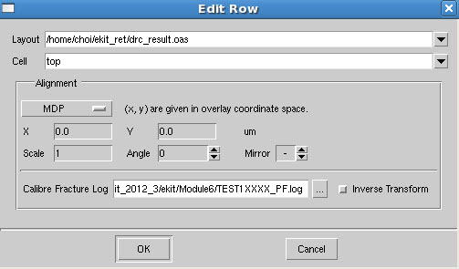

The primary method
of visually comparing results is through the Overlay tool. Use this
tool to overlay a pattern file over an original database or overlay
Calibre MDPverify results on top of a pattern file.
Procedure
- Load layouts and construct
an overlay with no transformation adjustments.
From the command line,
while invoking a layout viewer such as Calibre DESIGNrev or Calibre
WORKbench:
calibremdpv -m <file1> -m <file2> ... -m <fileN> -overlay
From the layout viewer
GUI, select File > Open Layout Files...
(or Ctrl-o) and load your layout, pattern files, or Calibre MDPverify
results, using the Open Overlay option
from the drop-down menu. The files are automatically loaded into
Calibre MDPview as an overlay.
- Right click the overlay in
the Cells Browser, and then select Edit
Overlay.... The Edit Overlay dialog box is displayed.
- Use the Edit Overlay dialog
box’s Add Files and Add Loaded Layouts buttons
to add layout databases to the overlay. The Add Files button can be used
to add the same layout(s) twice, and the Add
Loaded Layouts button only adds in-memory layouts not already
in the list.
- Select a layout from the Edit
Overlay dialog box’s ID column and click the Remove button to remove a layout
file from the overlay.
- Select layout fields in the
Edit Overlay dialog box’s layout table to change the topcell name
and also make layout translations. This can also be accomplished
clicking the Edit... button.
This invokes the Edit Row dialog box.
- In the Edit Row dialog box,
select a row with a fracture output layer that you want to align.
- Select MDP from the drop-down menu
in the Alignment section.
- Compensate for any transformation
that occurred during fracturing by specifying the path to your fracture
log in the Calibre Fracture Log text entry field. Calibre MDPview
will take the MDP transform information from the log file and use
it to align the selected overlays.
- If you wish to apply an inverse
transformation (for example, if you want to match the pattern file
to the original layout), select Inverse
Transform.
Figure 1. Edit Row With MDP
Transform
- Click OK to apply the transforms.
- In the Edit Overlay dialog
box, click Apply to
save the changes.
- Click Close when you are done with
all changes.